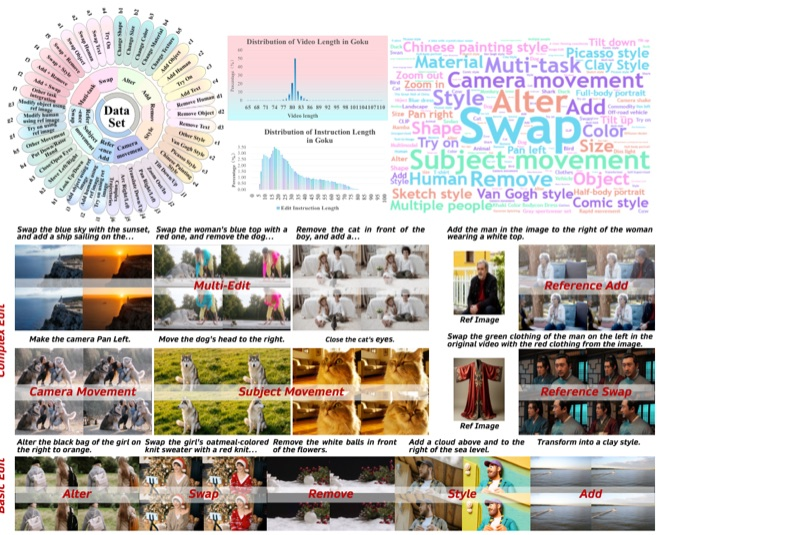
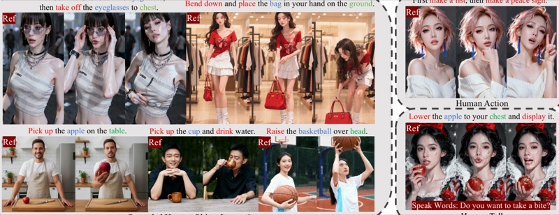
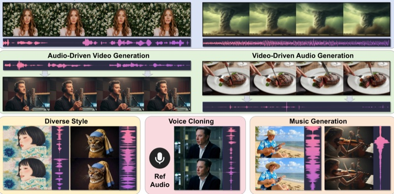
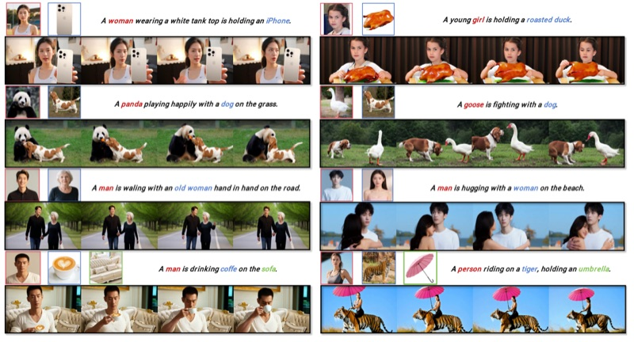
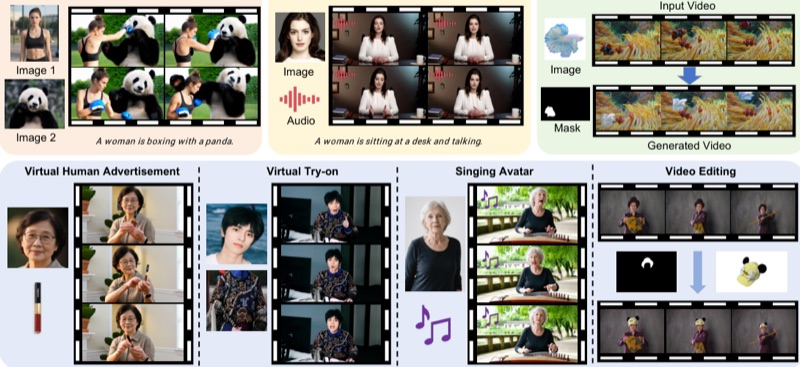
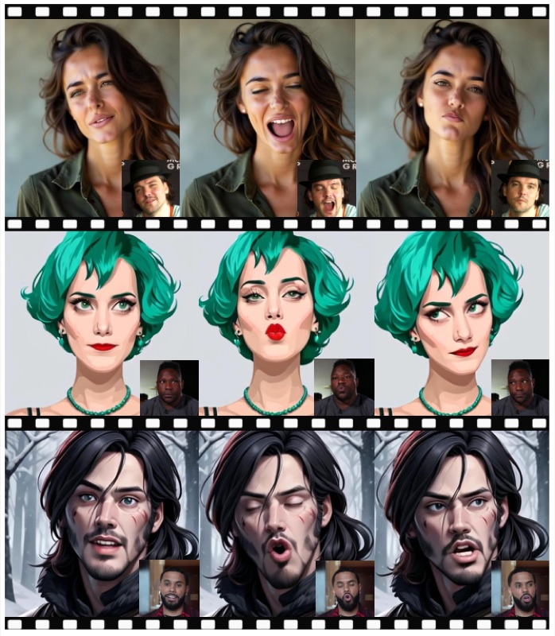
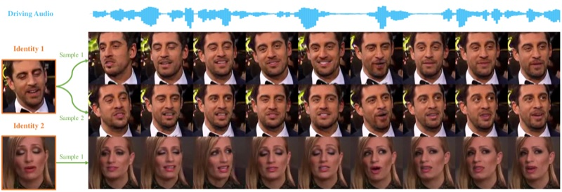

Hy-Nomas: Towards Free-form Interactive World Generation
Technical report, 2026
I am a Senior Researcher at Tencent Hunyuan in Shanghai, currently working on interactive video world models and post-training of video generation foundation models. My research interests include video generation and editing, joint audio-video generation, and digital human synthesis.
At Tencent, I have been a core contributor to HunyuanVideo 1.0 and Hy-Nomas, and led the development of HunyuanCustom and HunyuanPortrait.
Before joining Tencent, I worked on virtual human generation at XiaoIce and on computer vision at YITU Technology. I received my M.Eng. in Control Theory and Control Engineering and B.Eng. in Automation from Zhejiang University.
Technical report, 2026





Technical report, 2025

Technical report, 2024
